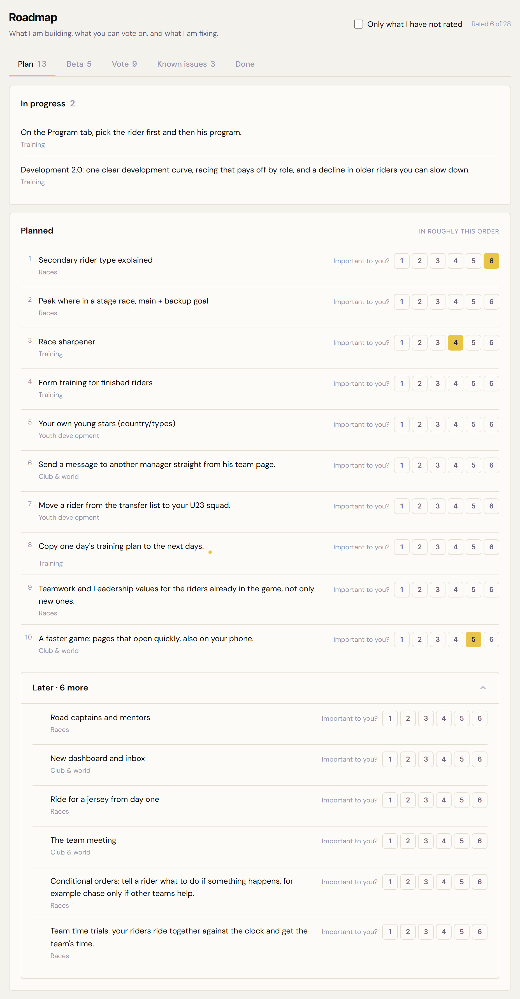
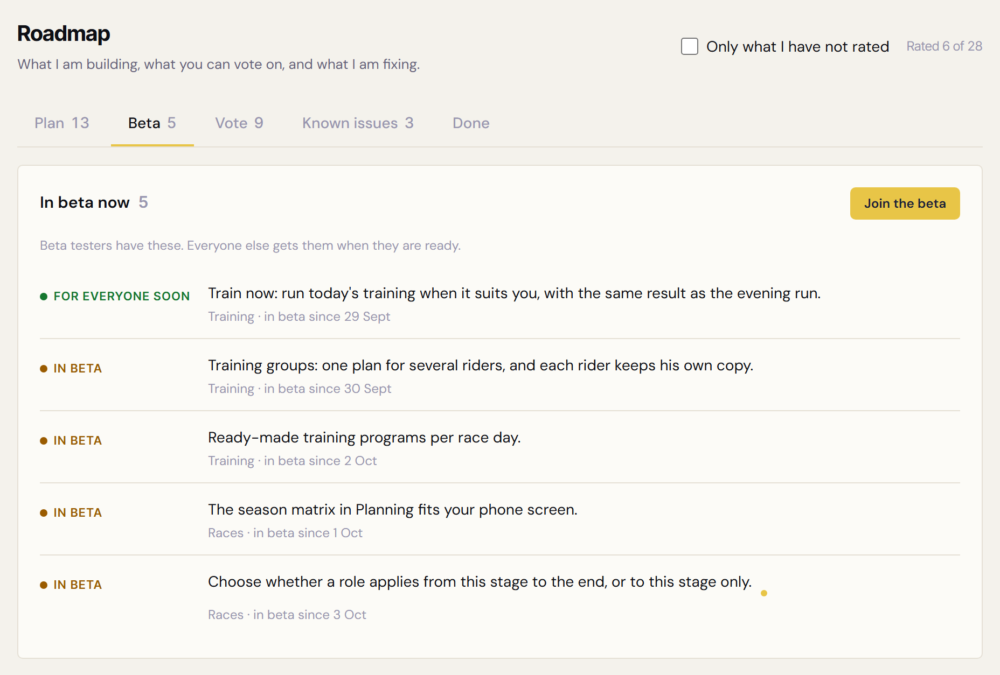
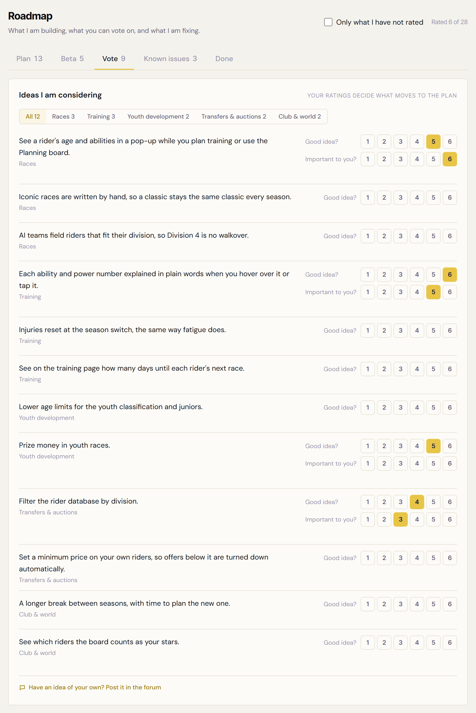
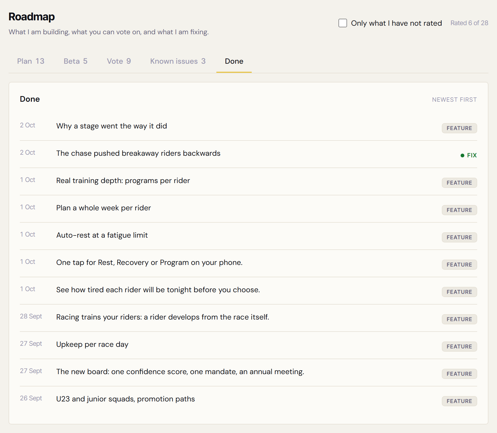
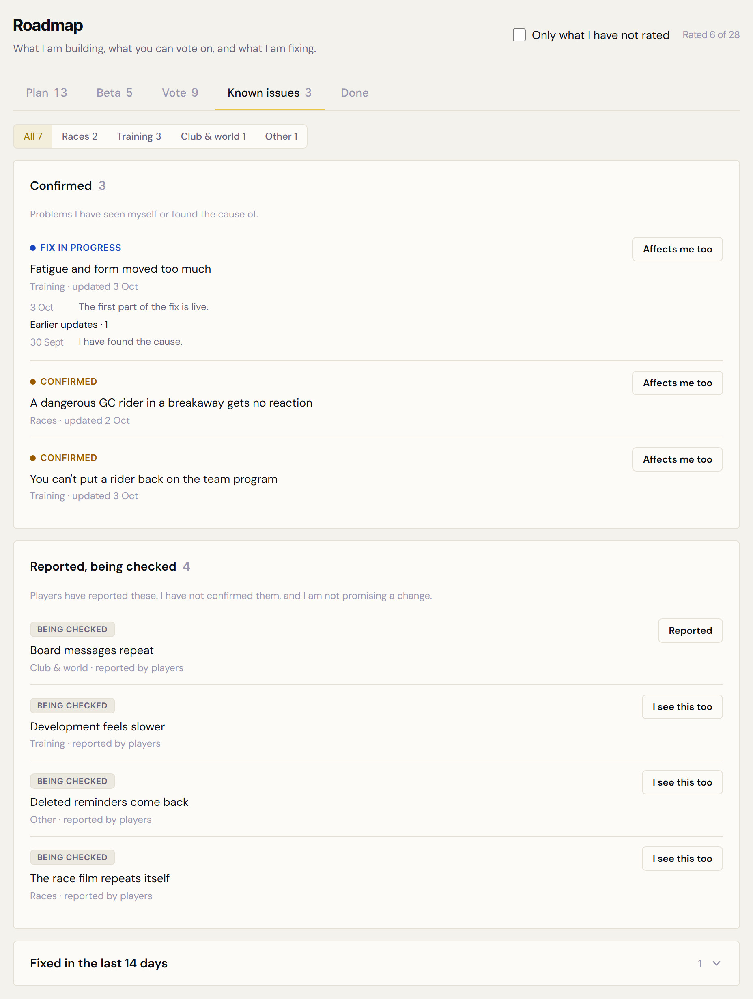
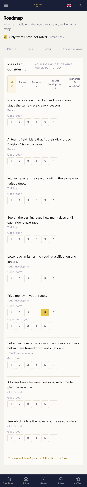
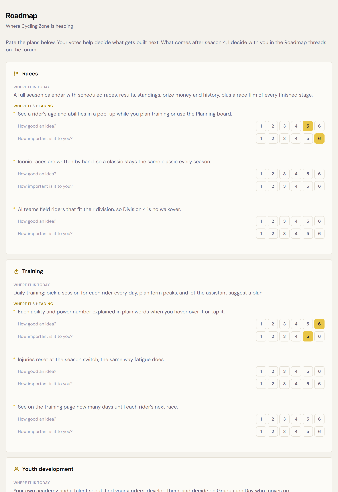

Plan (1440 px)

Beta (1440 px)

Vote (1440 px)

Done (1440 px)

Known issues (1440 px)

Vote på telefon (390 px), filteret slået til som standard

/roadmap på main, indlogget (de første 1,5 skærme)

1
3
1
2
3
4
5
6
6
7
7
8
9
9
10
11
11
I dag er alt én lang side uden faner: hvert område har sin egen blok, og hver idé har to skalaer under sig. Med billedets 12 idéer er siden 3.4 skærme lang i 1440 px; prod har flere punkter og er længere. Planlagte og igangværende punkter vises slet ikke (main henter kun status active og shipped).
I DAG (main)
EFTER #6150: /roadmap i fem faner
Ægte punkter fra roadmap-indholdsudkastet (afsnit 1, 2, 5.6 og 6c), mocket lokalt. Filteret "Only what I have not rated" er slået fra på 1440-billederne, så besvarede punkter ses.
1Fem faner med tal: Plan og Vote viser, hvor mange du mangler at bedømme; Known issues viser bekræftede fejl. I dag: ingen faner.
2Filteret "Only what I have not rated" (standard til, huskes) og tælleren "Rated 6 of 28".
3Plan har kun én skala, "Important to you?". I dag har hvert punkt to skalaer (idé + vigtighed).
4Later-folden: punkterne efter de næste ti ligger samlet og foldes ud.
5Gul prik ved punkter, der er nye siden sidste besøg.
6Beta: "Join the beta" fører til ansøgningen under Profil; "For everyone soon" står først.
7Vote i to trin: "Important to you?" kommer frem, når "Good idea?" er valgt (øverst besvaret, nedenunder ikke).
8Known issues: bekræftet fejl med daterede opdateringer; ældre opdateringer i en fold.
9"Reported, being checked": det, spillerne har meldt ind, uden løfte. Knappen viser "Reported", når du selv har meldt.
10Done: features og rettede fejl i én liste, nyeste først.
11Telefon: Vote med filteret slået til. Områdefilteret og fanerækken er for brede (se fund i PR'en).
Legende